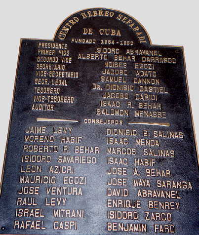
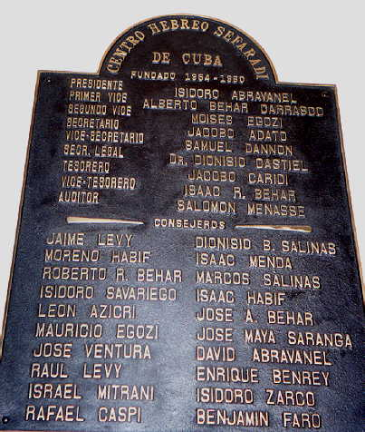

Photos by a Jewish Visitor to Cuba, Spring 1999 (page one) Havana - Jewish Community Center Entrance  Havana - Commemorative Plaque Founders of Sephardic Jewish Center (Founded 1954) Next Home Contents Photos
Photos by a Jewish Visitor to Cuba, Spring 1999
(page one)
Havana - Jewish Community Center Entrance

Havana - Commemorative Plaque Founders of Sephardic Jewish Center (Founded 1954)
Next